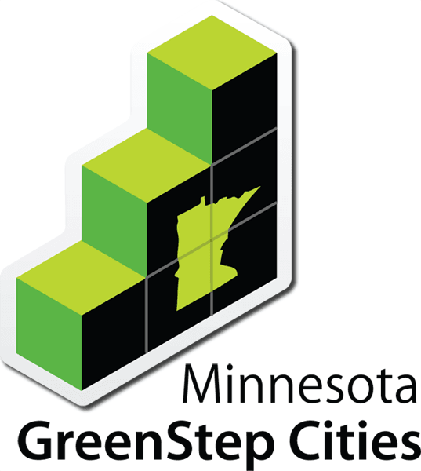
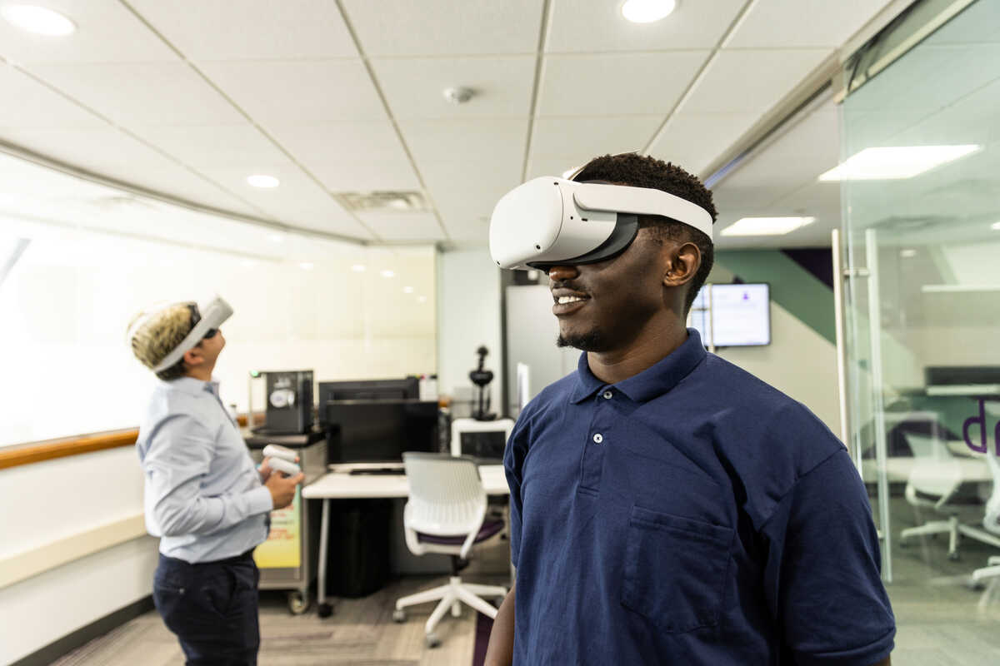
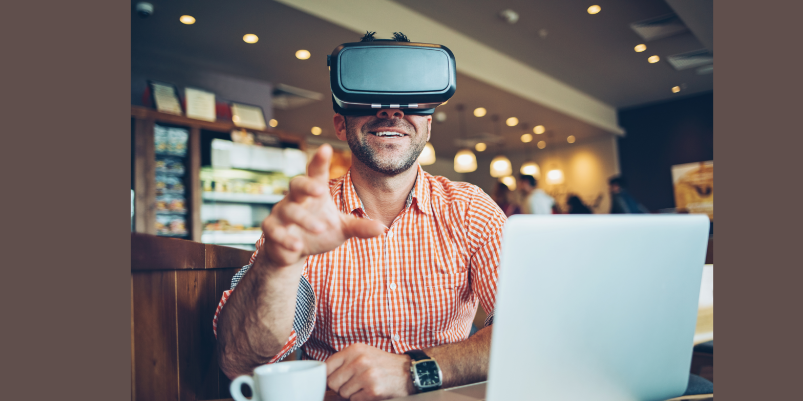
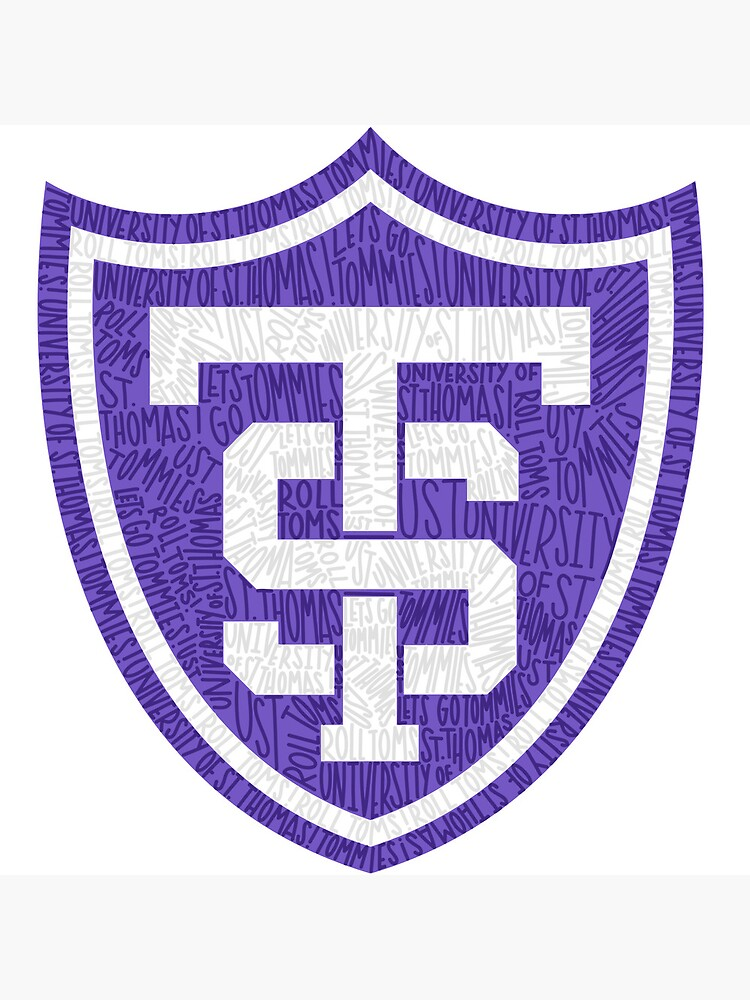

About Me
My name is Hadi Shaar, and I am a Computer Science student at the University of St. Thomas.
I am majoring in Computer Science with a minor in Business Administration with a Marketing focus.
My interests include software development, virtual reality, web applications, databases, business,
and using technology to create practical solutions for real people.
My computer science background has helped me develop technical skills in programming, web development,
database design, debugging, and project development. My liberal arts education and business background
have also helped me grow in communication, teamwork, ethical thinking, marketing, and understanding how
technology affects people and communities.
You should hire me because I bring both technical ability and a practical, human-centered mindset.
I am hardworking, adaptable, and willing to learn. I care about building solutions that are clear,
reliable, useful, and connected to real-world needs.
Projects and Experiences

GreenStepEmployee Capstone Project
Description: GreenStepEmployee was my senior capstone project at the University of St. Thomas.
The project focused on creating a software solution connected to sustainability, employee participation,
and organizational impact. This project allowed me to apply computer science skills to a real-world problem
while also thinking about how technology can support the common good.
My Contribution: I contributed to the planning, design, and development of the application.
My work included helping shape the database structure, improving the user interface, organizing project goals,
and connecting the technical work to the purpose of the project.
SOAR Reflection:
Situation: Our team needed to build a meaningful capstone project connected to a real-world issue.
Obstacle: We had to balance technical requirements, deadlines, teamwork, and user needs.
Action: I helped develop the application, organize features, and connect our technical decisions to the project goals.
Result: I gained stronger experience in software development, databases, teamwork, communication, and building technology with social impact.
capstone
sustainability
web development
database design
common good
teamwork

University of St. Thomas VR Lab
Description: As a VR Development Intern at the University of St. Thomas VR Lab, I worked on
interactive virtual reality projects using tools such as 3DVista, Unity, C#, and other VR technologies.
My work included developing VR applications, managing lab projects, training others on VR tools and headsets,
and helping direct and edit VR film content.
My Contribution: I helped manage projects in the lab, supported the development of interactive
VR applications, taught others how to use VR tools, and contributed to the production and editing process for
VR content.
SOAR Reflection:
Situation: The VR Lab needed projects that were both technically functional and easy for users to understand.
Obstacle: VR tools can be complex, and users often need clear instructions to feel comfortable using them.
Action: I developed VR content, trained users, tested interactions, and improved the clarity of the experience.
Result: I improved both my technical VR skills and my ability to communicate complex tools in a simple way.
virtual reality
Unity
C#
3DVista
training
communication
Taxfully Software Engineer Internship
Description: During my Software Engineer Internship at Taxfully, I developed and maintained
the company website using HTML, CSS, and JavaScript. I also managed the company website backend using WordPress,
updated tax-related content and blog posts, and worked with the marketing team on SEO strategies.
My Contribution: I improved page load time, maintained website content, updated WordPress pages,
and collaborated with the marketing team using tools such as Yoast SEO and Google Analytics.
Failure → Learning → Change: One challenge I experienced was learning how small website changes
could affect performance, user experience, and SEO. At first, I focused mainly on making updates work visually.
Over time, I learned to also think about speed, search visibility, structure, and the business purpose behind
each update. This changed how I approach web development because I now think about both the technical side and
the user/business impact.
software engineering
HTML
CSS
JavaScript
WordPress
SEO
Google Analytics
Star Map Application
Description: The Star Map Application is a 3D star map app that enables real-time sky exploration
using gyroscope and touch navigation. The project involved accurate star positioning, user interaction, debugging,
and performance optimization.
My Contribution: I developed parts of the application using Swift, Python, and Unity3D.
I worked on improving responsiveness, smoothing interaction, and debugging performance issues so the user
experience felt more natural.
Swift
Python
Unity3D
3D application
debugging
performance

Coffee Shop VR Application
Description: The Coffee Shop VR Application was a virtual reality project designed to teach
conversational Spanish in an interactive setting. This project connected computer science with education,
language learning, and user experience design.
My Contribution: I helped develop the VR application using tools such as 3DVista, Mistika VR,
and Blender. I also captured and edited 360-degree footage to create a more realistic and engaging learning experience.
virtual reality
Spanish
education
3DVista
Mistika VR
Blender
interdisciplinary

University of St. Thomas Virtual Tour
Description: The University of St. Thomas Virtual Tour was a project focused on creating a
user-friendly virtual campus tour. The goal was to help users explore key campus locations through interactive
features, multimedia content, and clickable hotspots.
My Contribution: I helped develop the virtual tour experience, integrate interactive elements,
and make the project accessible across devices. This project strengthened my understanding of user experience,
accessibility, media design, and technical implementation.
virtual tour
user experience
accessibility
multimedia
interactive design
education